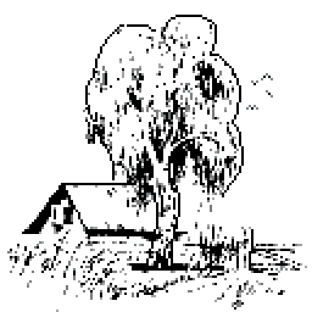

Александр Трифонович Твардовский. Мой жизненный путь
Сборник составлен Лицкевичем Владиславом

«Мне
сладок был тот шум сонливый…»
«Огромный,
грузный, многоместный…»
«И
жаворонок, сверлящий небо…»
«К
обидам горьким собственной персоны»
«Чернил
давнишних блеклый цвет»
Мне сладок был тот шум сонливый
И неусыпный полевой,
Когда в июне, до налива,
Смыкалась рожь над головой.
И трогал душу по-другому, —
Хоть с детства слух к нему привык, —
Невнятный говор или гомон
В вершинах сосен вековых.
Но эти памятные шумы —
Иной порой, в краю другом —
Как будто отзвук давней думы,
Мне в шуме слышались морском.
Распознавалась та же мера
И тоны музыки земной…
Все это жизнь моя шумела,
Что вся была еще за мной.
И все, что мне тогда вещала,
Что обещала мне она,
Я слышать вновь готов сначала,
Как песню, даром что грустна.
Картины природы вызывают у поэта в этом стихотворении ассоциации с далеким детством, воскрешают в памяти давние события, их зрительную и звуковую окраску. Этот «отзвук давней думы», постоянное ощущение «связи времен» чрезвычайно характерен для позднего Твардовского. Это неотъемлемое свойство его натуры, свойство, которое окрасило все его творчество, особенно сильно – в послевоенное время.
Огромный, грузный, многоместный
И тесный — через всю стран
Тянул в пустыне поднебесной
Свою тяжёлую струну.
С натугой ровной делал дело,
Тянул — ни кренов, ни толчков.
И небо нижнее синело
Кой-где в разрывах облаков.
По стрелкам выверенным правил —
Видна земля иль не видна.
И, как канат на переправе,
Брунжала басом та струна.
Даже такое, казалось бы, ультрасовременное творение рук человеческих, как скоростной воздушный многоместный лайнер, по каким – то ассоциациям вызывает у поэта воспоминания о пароме из детства и переправой.
…И жаворонок, сверлящий небо
В трепещущей голубизне,
Себе и миру на потребу
Оповещает о весне.
Все как тогда. И колокольня
Вдали обозначает даль,Окрест лежащую раздольно,И только нету сумки школьной,
Да мне сапог почти не жаль —
Не то что — прежних, береженых,
Уже чиненных не впервой
Моих заветных сапожонок,
Водой губимых снеговой.
Вновь и вновь вспоминает поэт свою юность, свое детство, с высоты прожитых лет всматривается в прошлое. Ему жаль утраченных навек детства и юности.
К обидам горьким собственной персоны
Не призывать участье добрых душ.
Жить, как живёшь, своей страдой бессонной, —
Взялся за гуж – не говори: не дюж.
С тропы своей ни в чем не соступая,
Не отступая – быть самим собой.
Так со своей управиться судьбой,
Чтоб в ней себя нашла судьба любая
И чью-то душу отпустила боль.
Но какая бы ни была грусть и жалость, поэта бесстрашно приближается к своей последней черте, более того, он обрел на склоне лет высшую мудрость, которой щедро делится с читателем. Как никогда, зорко отличает он теперь подлинные ценности от мнимых, иллюзий – то реальности.
Не знаю, как бы я любил
Весь этот мир, бегущий мимо,
Когда б не убыль прежних сил,
Не счет годов необратимый.
Не знаю, как горел бы жар
Моей привязанности кровной,
Когда бы я не подлежал,
Как все, отставке безусловной.
Тогда откуда бы взялась
В душе, вовек неомраченной,
Та жизни выстраданной сласть,
Та вера, воля, страсть и власть,
Что стоит мук и смерти черной.
Даже в самом сознаний неизбежности смерти Твардовский, как это ни парадоксально, видит ничем не заменимое благо, потому что, надейся человек на бессмертие, он не в состояний был бы оценить прелесть жизни, а значит, лишился бы единственного источника творческих сил.
Чернил давнишних блеклый цвет,
И разный почерк разных лет
И даже дней – то строгий, чёткий,
То вроде сбивчивой походки –
Ребяческих волнений след,
Усталости иль недосуга
И просто лени и тоски.
То – вдруг – и не твоей руки
Нажимы, хвостики, крючки,
А твоего былого друга –
Поводыря начальных дней...
То мельче строчки, то крупней,
Но отступ слева всё заметней,
И спуск поспешный вправо, вниз,
Совсем на нет в конце страниц –
Строки не разобрать последней.
Да есть ли толк и разбирать,
Листая старую тетрадь
С тем безысходным напряженьем,
С каким мы в зеркале хотим
Сродниться как-то со своим
Непоправимым отраженьем?..
Готовясь к «отставке безусловной», Твардовский сумел преодолеть и собственное искушение заново «отредактировать» свой творческий путь, дабы каждое, даже юношеское, стихотворение представляло собой верх совершенства. Отметив про себя, как, менялись с годами, почерк становился все неразборчивее, Твардовский проявил отличную самоиронию.